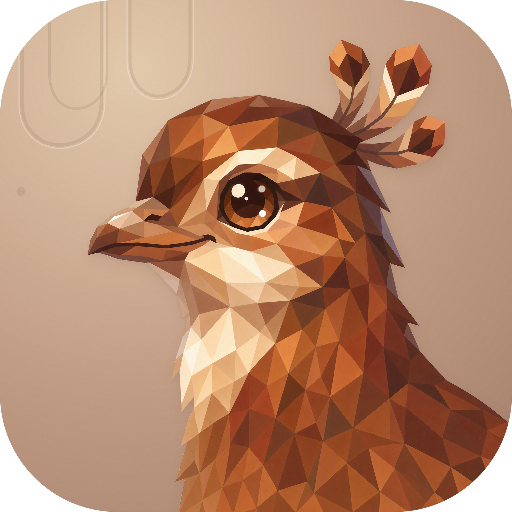
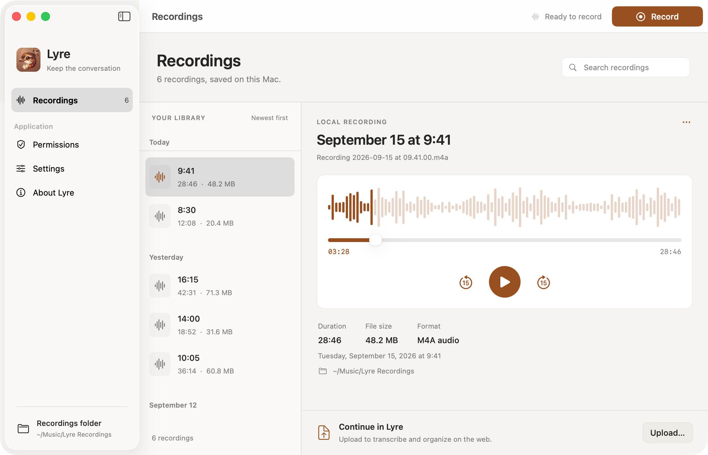

LYRE / MACOS
一个窗口，完整的录音工作空间。
设计与实现说明 ↗
查看
录音库
权限
设置 · 录音
设置 · 自动上传已开启
设置 · 连接
设置 · 外观
关于 Lyre
录制进行中
录制按钮 · 等待
菜单栏快捷控制
上传 · 信息填写
上传 · 进行中
上传 · 失败与重试
上传 · 已完成
自动上传 · 后台状态
自动上传 · 失败与重试
权限 · 已就绪
权限 · 麦克风未获授权
麦克风 · 断连后临时切换
麦克风 · 无可用输入
设置 · 会议提醒
会议 · 开始提醒
会议 · 结束提醒
删除 · 确认对话框
录音 · 错误提示
首次使用 · 空录音库
多选录音
搜索 · 无结果
紧凑窗口 · 录音库
紧凑窗口 · 设置
紧凑窗口 · 上传
紧凑窗口 · 长文件名
上传时切换到空目录
浅色
深色

录音库
按日期整理录音，在右侧试听、查看文件信息和开始上传。
查看原图 ↗
启用 JavaScript 可切换场景，或直接查看
深色录音库
。